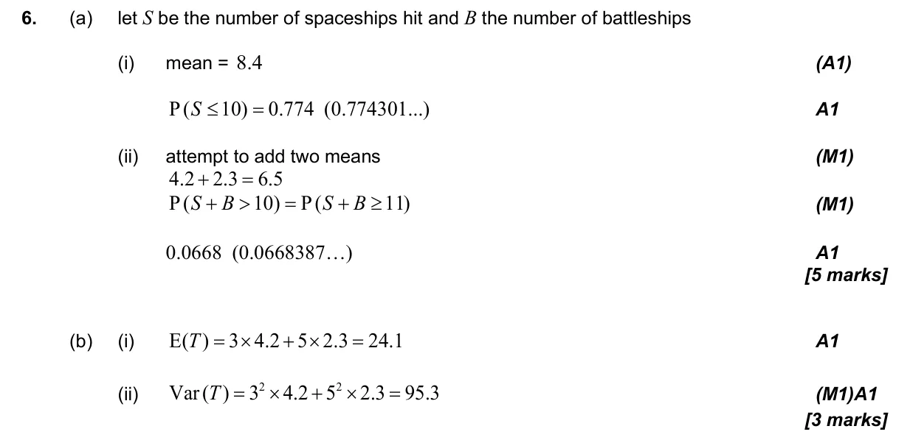
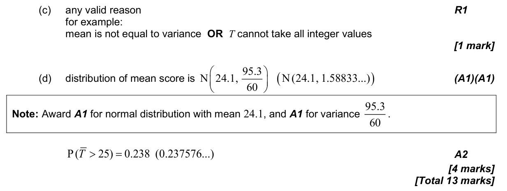

4.17 The Poisson distribution4.15 Combining normal variables and the central limit theorem4.14 Linear combinations of random variables and unbiased estimates
Question

Markscheme


13 marks - May P2 TZ1 - Mathematics: Applications and Interpretation HL

